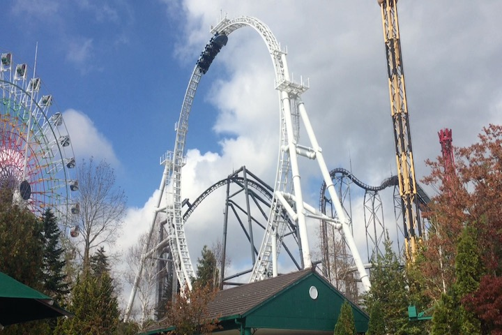
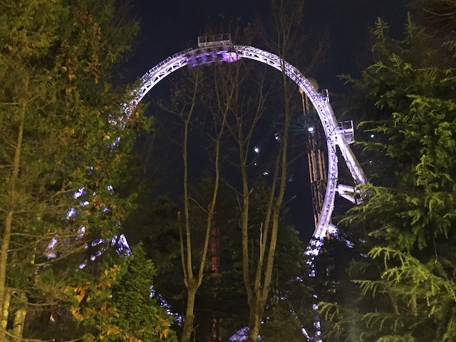
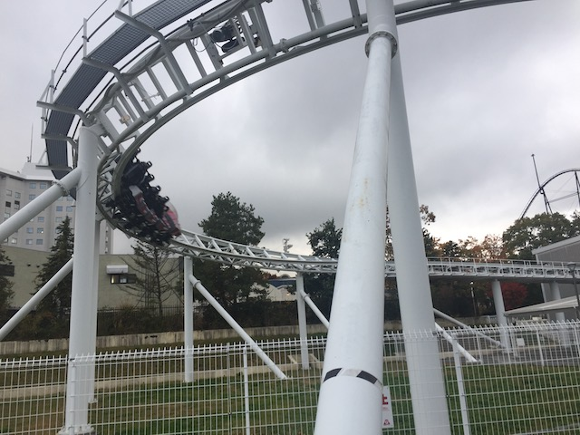
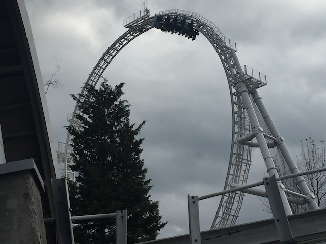
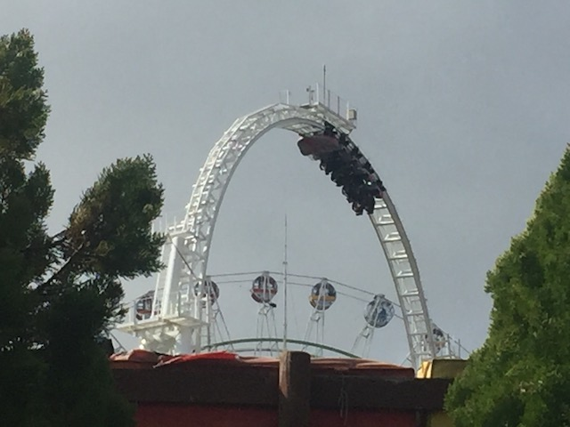
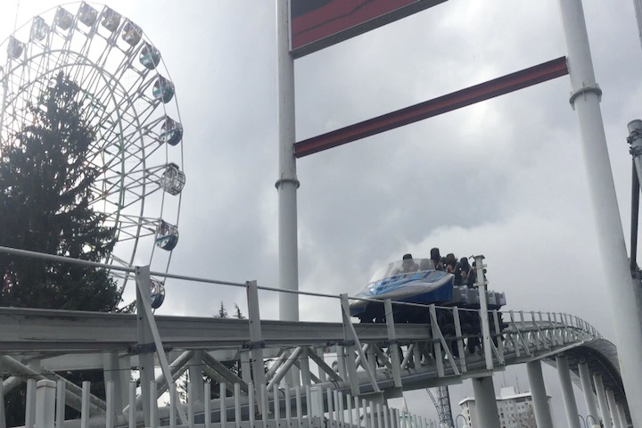
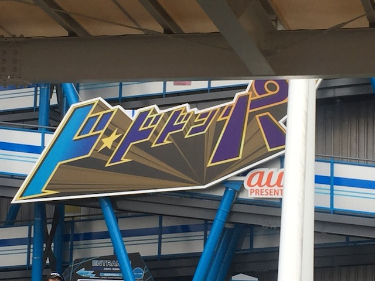

| |
Dododonpa Review

We're here at Fuji-Q Highlands. Today's ride we're going to be reviewing is Dododonpa, and....this is a really good ride. A REALLY good ride. It's the only S&S Air Thrust Coaster left in the world and only one of two ever built (Stupid Hypersonic XLC @ Kings Dominion closing). And yeah. This ride is freaking awesome! After getting in the seats and pulling down the big OTSRs, we're off! We roll around a turn, and go to launch tunnel. And stop. Yeah. Just sitting here. Waiting to launch. And I have to admit. This roller coaster comes the closest to causing me to get nervous. It's pretty much impossible to get scared by a roller coaster when you're a cliff jumper who jumps off 70 ft cliffs for fun. But I can easily see this scaring some more casual coaster riders who normally don't have a problem riding roller coasters. ESPECIALLY if you know about the launch on this ride. Because let me tell you. The launch on Dododonpa is F*CKING INSANE!!! BEST LAUNCH IN THE WORLD!!! You hear the air launch get ready, they speak to us in Japanese, and I have no idea what they're saying, but why do I get a feeling that it basically translates into "You're all f*cked" lol. Then they just shout "LAUNCH TIME!!!" and count us down (I forget if it was in English or Japanese). 3 2 1!!! BAM!!!! HOOOOOOOOOHHHHH SHIIIIIIIIIIIIIIIIIIIIIIIIIIIIT!!!!! This launch is just INSANE!!! I normally don't give stats in my coaster reviews, but this ride launches from 0 to 111.9 mph in 1.6 seconds. Well, actually, it launches from 0 to 180 km/hr in 1.6 seconds since Japan, like the rest of the world uses the Metric System. The best way for me to describe this launch is that this launch is like crashing into a brick wall at freeway speeds. Only you're accelerating that quickly instead of deccelerating that quickly. So....if you watch a car accident in reverse, that's kind of what this launch is like. This launch makes Xcelerator (previously the strongest launch ever and a distant 2nd strongest now) feel like Pony Express in comparison (Ignoring the Pony Express is the best ride ever joke today). It is THAT good!!! Yeah, we're out of the launch tunnel now, and....we dip down!!! You don't notice the dip at all thanks to the insane launch! Go through another tunnel. TA....We're out already. This ride is fast. We then head into a big banked turn. And....this ride is bouncy. Dododonpa bounces in some weird way. I think it's the fact that it's an S&S Thrust Air coaster. Still bummed that Hypersonic XCL closed. Oh well. No point fretting over that. We through another quick tunnel, and then we head into the loop. Now originally, this ride opened up with a Top Hat in this place, and I heard stories of airtime so srong that it hurt. That sounds so intriguing and part of me wishes I got to ride Dodonpa in its original format. But oh well. Time to do the loop. This loop is big. Very big. And at the top, there's a decent amount of hangtime. It's kind of like the giant loop on Full Throttle. Not super intense like that brick wall launch, but a lot of fun. We go back down, and into another tunnel. We then go around a turn, and up what appears to be a very gradual climb that kind of acts like a giant trim brake, skimming off our insane speed before gliding into the brake run, which is LOUD!!! Yeah. The ride is bouncy. We sort of bounce around another banked turn, getting a nice view of Takabisha, before really stopping at the final final brake run. So that's Dododonpa. That launch is SO GOOD!!! It MAKES this ride. Combine that with the rest of the ride, and it's just a ton of fun. Amazing and rare, you have to give it a ride while at Fuji-Q.
9/10
Location: Fuji-Q Highlands
Dodonpa opened in 2001
Dododonpa became Dododonpa and replaced the Top Hat with the Loop in 2017
Built by: S&S Power
Last Ridden: November 5, 2018
Dododonpa Photos






Home
|